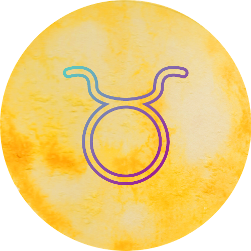
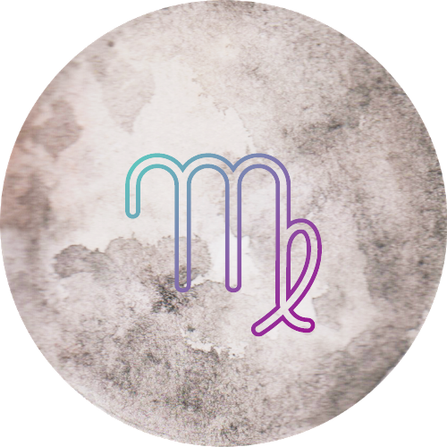
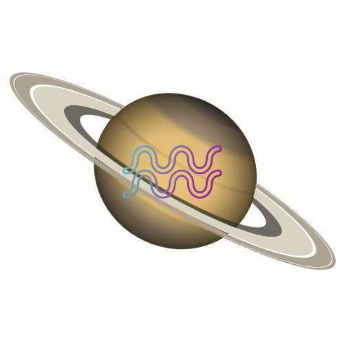

Áries
21 de março a 20 de abril
Esse signo é regido pelo planeta Marte. Quem tem sol em Áries costuma viver no agora; além de possuir um grande prazer em existir, ação e decisão também podem ser algumas de suas marcas. A liderança é uma característica forte no signo, que pode ser usada para o empreendedorismo.

Touro
21 de abril a 20 de maio
Esse signo é regido pelo planeta Vênus. Quem tem sol em Touro costuma não abrir mão do que traz conforto e bem-estar, mas pode ter a possessividade em evidência. O signo preza pela beleza física e pela gula. A satisfação de Touro vem do contato com todos os cinco sentidos.
Gêmeos
21 de maio a 20 de junho
Esse signo é regido pelo planeta Mercúrio. Quem tem sol em Gêmeos costuma apreciar novas ideias, novos lugares e novas pessoas. Gêmeos tem carisma de sobra e tende a fazer amigos com muita facilidade. A superficialidade e a inconsequência também podem ser algumas das marcas do signo.

Cancêr
21 de junho a 21 de julho
Esse signo é regido pela Lua. Quem tem sol em Câncer costuma buscar o que lhe traz segurança. O signo é maternal e emotivo e tem uma proximidade com o apego ao passado. Câncer costuma ter a intuição acentuada, sentir as coisas no ar e captar tudo logo no primeiro olhar.

Leão
22 de julho a 22 de agosto
Esse signo é regido pelo Sol. Quem tem sol em Leão costuma amar plateias e aplausos. O signo tem a coragem e o humor como marcas registradas, mas também o orgulho e o autoritarismo. Leão geralmente valoriza as oportunidades e aproveita cada momento, sabe amar e ter generosidade.

Virgem
23 de agosto a 22 de setembro
Esse signo é regido pelo planeta Mercúrio. Quem tem sol em Virgem costuma buscar constantemente a perfeição, tudo sempre poderia estar um pouco melhor. Signo observador, que costuma identificar o detalhe que ninguém mais percebe. Virgem tem praticidade e organização, mas também pode ser frio e cético.

Libra
23 de setembro a 22 de outubro
Esse signo é regido pelo planeta Vênus. Quem tem sol em Libra costuma buscar sempre o equilíbrio e conviver com a indecisão. Regido por Vênus, o signo tem uma aproximação natural com as artes. Libra costuma ter ética, mas também pode ter vaidade em excesso e comportamentos considerados de “mau gosto”.

Escorpião
23 de outubro a 21 de novembro
Esse signo é regido pelo planeta Plutão. Quem tem sol em Escorpião costuma ter muita perspicácia, não é a toa que são naturalmente detetives. O sexto sentido do signo alerta para possíveis “perigos” logo de cara. Escorpião tem uma capacidade de regeneração única, mas também pode ter muitos ciúmes.
Sagitário
22 de novembro a 21 de dezembro
Esse signo é regido pelo planeta Júpiter. Quem tem sol em Sagitário costuma ser viajante, sua casa é o mundo inteiro. O signo viaja muito também em sua própria mente. Não tente aprisionar Sagitário de nenhuma forma, ele não aceita limites. Otimista e jovial, pode ter exageros e uma dose de deboche.

Capricórnio
22 de dezembro a 20 de janeiro
Esse signo é regido pelo planeta Saturno. Quem tem sol em Capricórnio costuma ter seus propósitos e metas bem definidos. Signo de praticidade que segue as regras do jogo tem total noção dos seus limites. Capricórnio é maduro e bem humorado, mas também pode ser frio nas relações e um tanto pessimista.

Aquário
21 de janeiro a 19 de fevereiro
Esse signo é regido pelo planeta Saturno. Quem tem sol em Aquário costuma ter a amizade como cartão de visita e ter uma conexão intensa com a liberdade. Signo idealista, tende a dar preferência aos diálogos racionais. Aquário é solidário e humano, também pode ser radical e bem “do contra”.